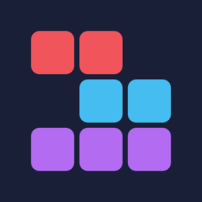

ブロックパズル
列をそろえて消す、格言あつめのパズル
ブロックパズルは、8×8 の盤にブロックを置き、縦か横の1列をそろえて消すパズルゲームです。いい点数をとるたびに、ことわざや故事成語が「格言図鑑」に増えていきます。
遊び方
- 下に並ぶ3つのブロックを、盤面へドラッグして置きます。ブロックは指の少し上に浮くので、白い影の位置に置かれます。
- 縦か横の1列が埋まると消えます。縦と横を同時に消したり、続けて消したりすると点数が大きく上がります。
- 3つとも置ける場所がなくなったらゲームオーバーです。
よくある質問
- 途中でアプリを閉じても続きから遊べますか。
- はい。ブロックを置くたびに自動で保存しています。次に開いたとき、ホームの「つづきから」で同じ盤面から再開できます。「はじめから」を選ぶと、途中のゲームは終了します。
- 格言はどうすれば集まりますか。
- ゲームオーバーのとき、点数が線に届いていれば、まだ持っていない格言を1つ手に入れます。線は図鑑が埋まるほど高くなります。あと何点で届くかは、結果画面に表示されます。全24種類です。
- ゲームオーバーから復活できますか。
- 1回のプレイにつき1回だけ、「広告を見て復活」を選べます。盤面の中央が空き、点数はそのまま続けられます。
- 広告の設定を変えたい。
- 広告に関する同意が必要な地域（欧州経済領域、英国、スイス）では、ホームの「広告の設定」から変えられます。トラッキングの許可は、iPhone の「設定」>「プライバシーとセキュリティ」>「トラッキング」でいつでも変えられます。許可しなくても、すべての機能を使えます。
- 機種変更で記録を引き継げますか。
- ハイスコアや格言図鑑は iPhone の中だけに保存しています。iCloud またはパソコンで iPhone 全体をバックアップ・復元した場合は引き継がれます。アプリを削除すると記録は消え、元に戻せません。
- 通信できない場所でも遊べますか。
- はい。ゲームは通信なしで遊べます。通信できないときは広告が表示されません。
動作環境
- iPhone、iOS 17 以降
- 縦向きのみ
お問い合わせ
不具合の報告やご要望は、kazuma09201101@icloud.comまでお送りください。お使いの iPhone の機種と iOS のバージョンを添えていただくと、原因を調べやすくなります。個人で開発しているため、お返事に時間がかかることがあります。